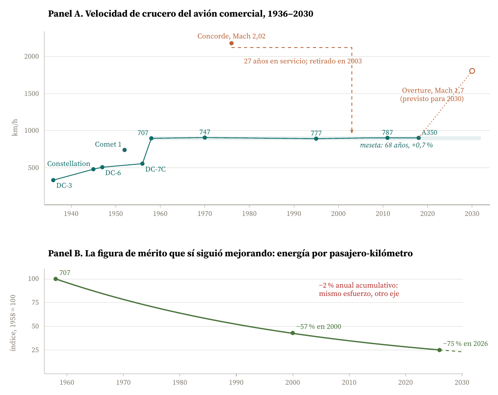
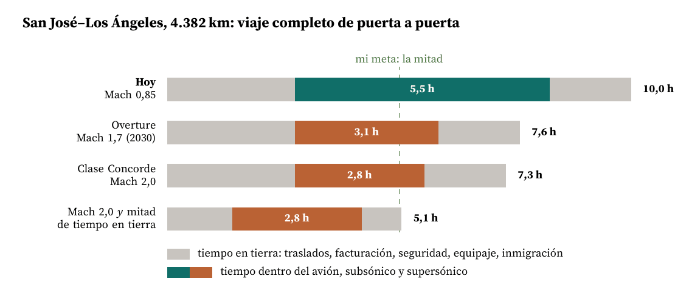
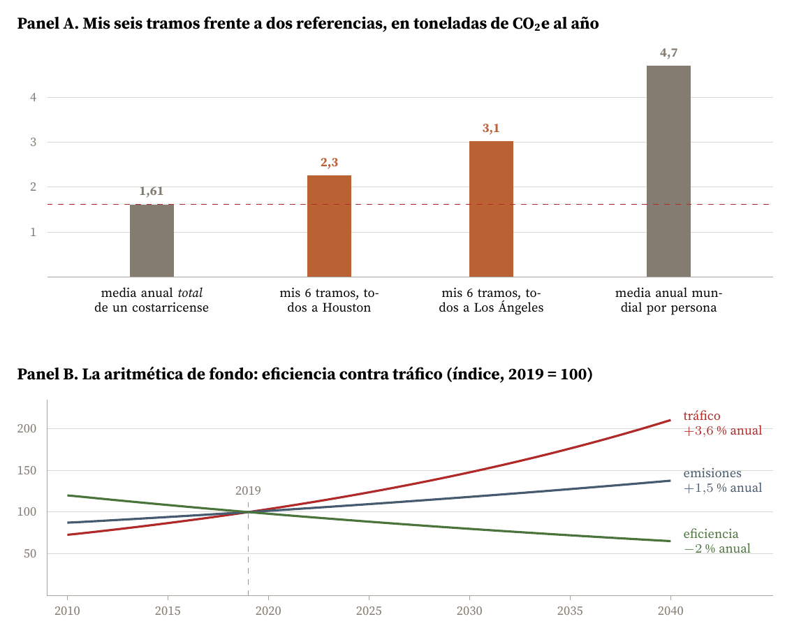
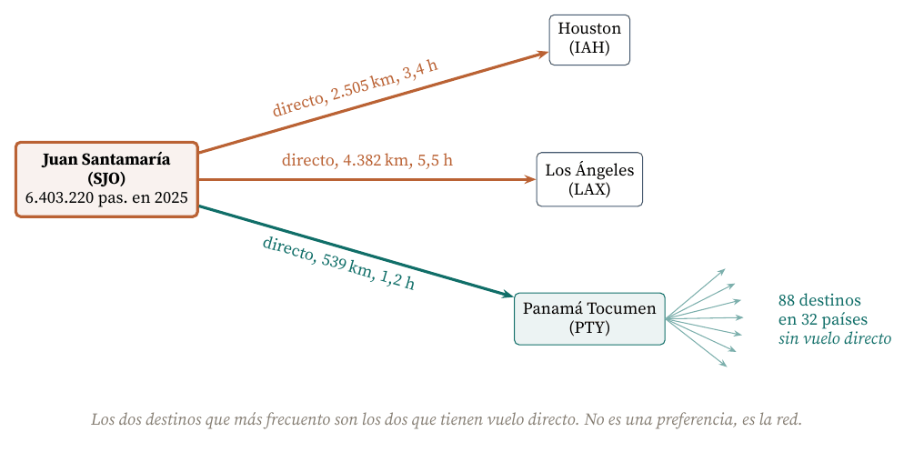

Seis respuestas personales y lo que la evolución tecnológica del transporte aéreo dice de cada una
Carlos Luis Rojas Aragonés
Las seis preguntas del foro son personales y las contesto como tales, sin adornarlas. Pero el módulo acaba de darnos un instrumento que sirve exactamente para esto: la figura de mérito, es decir, la medida cuantitativa del desempeño de una tecnología en la función que presta, independiente de la implementación concreta que la entregue (de Weck, 2022). Cada una de mis respuestas contiene, escondida, una figura de mérito que estoy usando sin declararla. Este trabajo consiste en declararla y en comprobar qué dice la evidencia sobre ella.
El resultado más útil de hacerlo es que en tres de las seis respuestas la figura de mérito que yo tenía en la cabeza no era la que de verdad me importa. En la de la velocidad, sobre todo. Ese desajuste no es un error mío: es el mismo desajuste que explica por qué el avión en el que vuelo hoy va a la misma velocidad que el que volaba mi abuelo.
| Pregunta | Mi respuesta | Figura de mérito que estoy usando en realidad |
|---|---|---|
| Cuántas veces vuelo al año | Seis, todas por trabajo | Ninguna: es el dato de entrada que hace medibles las otras cinco |
| Cómo mejoraría la experiencia | Que el vuelo dure la mitad | Creí que era la velocidad de crucero. Es el tiempo sentado, que no es lo mismo |
| Vergüenza de volar | No me afecta; mis viajes son necesarios | kg de CO2 equivalente por pasajero-kilómetro, y su tasa de mejora frente al crecimiento del tráfico |
| Los tres mejores aeropuertos | Atlanta y Panamá | Dos distintas y las dos legítimas: tránsito y conectividad de red |
| Los tres que más frecuento | Juan Santamaría, Houston y Los Ángeles | Ninguna de calidad: es la topología de la red vista desde San José |
| Modos más lentos y limpios | No me preocupa; que avance la tecnología | Tiempo puerta a puerta frente a CO2 por viaje, en un frente de Pareto que en Costa Rica tiene un solo punto |
Este año he volado seis veces, todas por motivos de trabajo. Ninguna de esas seis fue por placer, y ninguna la habría hecho si el asunto se hubiera podido resolver por videoconferencia.
Seis es un número modesto en términos absolutos y muy alto en términos globales: alrededor del 80 por ciento de la población mundial no ha volado nunca (Ritchie, 2024). Lo anoto no como confesión sino porque el número importa para las preguntas 3 y 6, que solo se pueden contestar con honestidad si uno pone antes su propia cifra sobre la mesa.
Como no llevo registro de itinerarios, en el Cuadro 2 calculo las distancias de círculo máximo de las rutas que sí uso y las convierto en tiempo y en emisiones. Las distancias son cálculo propio a partir de las coordenadas de cada aeropuerto; los factores de emisión son los oficiales británicos, que son los que usa la mayoría de las herramientas de contabilidad corporativa (DESNZ, 2025).
| Ruta | Distancia (km) | Tiempo de bloque (h) | Factor (kg/pax-km) | CO2e por tramo (kg) |
|---|---|---|---|---|
| San José–Panamá (SJO–PTY) | 539 | 1,2 | 0,150 | 81 |
| San José–Houston (SJO–IAH) | 2.505 | 3,4 | 0,150 | 376 |
| San José–Atlanta (SJO–ATL) | 2.629 | 3,5 | 0,150 | 394 |
| San José–Los Ángeles (SJO–LAX) | 4.382 | 5,5 | 0,117 | 513 |
Seis tramos de esas rutas suman entre 2,3 y 3,1 toneladas de CO2 equivalente, según la mezcla: 2,3 si los seis fueron a Houston, 3,1 si los seis fueron a Los Ángeles. Volveré sobre esa cifra en la pregunta 3, porque es la única forma seria de contestarla.
Mi respuesta espontánea fue esta: que los vuelos fueran mucho más rápidos, que duraran la mitad o menos. Me desespero después de más de cinco horas metido en un avión.
Es la respuesta que da casi todo el mundo, y resulta que es la más interesante de las seis, porque contiene dos cosas que conviene separar: una figura de mérito que lleva sesenta y ocho años sin moverse y un diagnóstico equivocado de mi propia molestia.
La velocidad de crucero del avión comercial es el ejemplo de manual de una figura de mérito que se satura. La Figura 1 la dibuja.

Figura 1. La velocidad se detuvo en 1958; el esfuerzo tecnológico no. Panel A: velocidades de crucero típicas a altitud de crucero. Entre el Boeing 707 de 1958 (897 km/h) y el Airbus A350 de 2018 (903 km/h) hay un 0,7 por ciento de diferencia en sesenta años. El Concorde es el único punto que rompió la meseta y fue retirado en 2003 (Wikipedia, 2026b); el Overture, previsto para 2030, es el intento de volver (Wikipedia, 2026a). Panel B: índice de energía por pasajero-kilómetro construido con la tasa de mejora de 2 % anual acumulativo que reporta la industria (IATA, 2026; Peeters et al., 2005); elaboración propia. Los dos paneles cubren el mismo periodo y cuentan la misma historia vista desde dos figuras de mérito distintas.
Entre el Boeing 707 que entró en servicio en 1958 a unos 897 km/h y el Airbus A350 que vuela hoy a 903 km/h hay un 0,7 por ciento de mejora en sesenta y ocho años. En los veintidós años anteriores, de 1936 a 1958, la misma figura de mérito se había multiplicado por 2,7. La curva no es una S incompleta: es una S que llegó a su asíntota y se quedó ahí.
La razón física es conocida: cerca de Mach 1 la resistencia de onda se dispara, y para atravesar esa barrera hace falta un ala completamente distinta, un motor distinto y un consumo que se multiplica. La razón económica es la que decidió el asunto. El Concorde cruzaba el Atlántico quemando prácticamente el mismo combustible que un Boeing 747 para llevar cien pasajeros en lugar de trescientos cincuenta (Wikipedia, 2026b). Su consumo por asiento-milla era entre dos veces y media y cinco veces peor que el de un subsónico comparable. Voló veintisiete años y se retiró en 2003.
Y aquí está lo que a mí me parece la lección del módulo. La industria no dejó de innovar en 1958: cambió de figura de mérito. El Panel B de la Figura 1 muestra el otro eje, el del consumo de energía por pasajero-kilómetro, mejorando a una tasa del orden del 2 por ciento anual acumulativo de forma sostenida (IATA, 2026; Peeters et al., 2005). Un 2 por ciento anual durante sesenta y ocho años es un factor de cuatro: el avión de hoy gasta la cuarta parte por pasajero y kilómetro que el de 1958.
Esto es exactamente lo que de Weck (2022) describe como el desplazamiento a lo largo de un frente de Pareto. Velocidad y consumo son dos figuras de mérito en conflicto. El mercado eligió el punto de ese frente que maximiza el asiento barato, no el asiento rápido, y lleva ahí desde los años setenta. Mi queja, traducida al lenguaje del módulo, es que yo preferiría otro punto del frente. Es una preferencia legítima, pero es minoritaria: cada vez que se le ha puesto precio, el pasajero medio ha elegido barato antes que rápido.
Aquí es donde mi respuesta espontánea se rompe, y el cálculo lo enseña mejor que cualquier argumento. Tomo mi ruta larga, San José–Los Ángeles, y descompongo el viaje entero de puerta a puerta, no solo el vuelo. La Figura 2 es el resultado.

Figura 2. Duplicar la velocidad no divide el viaje entre dos. Descomposición del viaje completo San José–Los Ángeles en tiempo en tierra (2,75 h antes del despegue y 1,75 h después del aterrizaje, que es lo que a mí me cuesta de verdad) y tiempo de vuelo (0,6 h fijas de rodaje, ascenso y descenso, más 0,7 h de penalización de aceleración y desaceleración en los casos supersónicos, más la distancia dividida entre la velocidad de crucero). Elaboración propia. Las 4,5 h en tierra son idénticas en las tres primeras filas: son la fracción que la velocidad no puede tocar.
El viaje entero me lleva hoy unas diez horas de puerta a puerta, de las cuales cinco y media están dentro del avión y cuatro y media están en tierra: traslados, llegar dos horas antes, facturación, seguridad, desembarque, equipaje e inmigración. Ese bloque de cuatro horas y media es indiferente a la velocidad del avión.
De ahí sale el resultado incómodo:
Es la ley de Amdahl aplicada a un viaje (Amdahl, 1967): acelerar sin límite una parte del proceso deja el total gobernado por la parte que no se aceleró. Y la parte que no se aceleró aquí no es aeronáutica, es administrativa: control de pasaportes, entrega de equipaje y el margen de seguridad que yo mismo me doy al salir de casa. Buena parte de eso ya sabemos cómo resolverlo, y es mucho más barato que un motor supersónico.
Al hacer el cálculo me di cuenta de que había declarado mal mi figura de mérito. Yo dije «que el viaje dure la mitad», pero lo que escribí a continuación fue «me desespero luego de estar más de cinco horas en un avión». No son la misma medida. La primera es el tiempo puerta a puerta; la segunda es el tiempo sentado en la cabina, y es esa la que de verdad me molesta.
Y la buena noticia es que la segunda sí se resuelve con velocidad, y con mucho menos de lo que yo pedía:
Es decir: Mach 1,7 no me da la mitad del viaje, pero sí me quita exactamente lo que me molesta. Declarar bien la figura de mérito cambió el requisito de «reducir el viaje un 50 por ciento», que es probablemente inalcanzable, a «mantener el tiempo en cabina por debajo de cuatro horas», que es un objetivo concreto y que un supersónico de Mach 1,7 cumple en todas mis rutas.
Sobre si eso va a existir: el demostrador XB-1 de Boom rompió la barrera del sonido el 28 de enero de 2025, el primer avión supersónico de desarrollo privado que lo consigue (Boom Supersonic, 2025), y el Overture apunta a entrar en servicio hacia 2030 (Wikipedia, 2026a). En paralelo, el X-59 de la NASA voló por primera vez el 28 de octubre de 2025 y superó la velocidad del sonido el 5 de junio de 2026, a Mach 1,1 y 43.400 pies (NASA, 2025, 2026). Su objetivo no es la velocidad sino el ruido: reunir datos de respuesta de la población a un estampido atenuado para que los reguladores puedan levantar la prohibición de volar en supersónico sobre tierra firme, que es la restricción que dejó al Concorde encerrado en rutas transatlánticas. La barrera que hay que romper esta vez no es la del sonido, es la regulatoria y la del consumo, y el problema del consumo sigue sin resolverse: sigue siendo el mismo frente de Pareto de 1976.
A mí no me afecta en absoluto. Cada viaje de trabajo que hago es estrictamente necesario, y no siento culpa por hacerlo. Mantengo esa respuesta después de haber hecho los números, pero los números me obligan a matizarla en un punto, y prefiero decirlo yo antes de que me lo digan.
El término flygskam nace en Suecia en 2017 y se convierte en un movimiento social entre 2018 y 2019 (Wikipedia, 2026c). Su efecto fue real y medible: los vuelos internacionales en aeropuertos suecos cayeron un 4 por ciento en un año, los pasajeros domésticos un 9 por ciento y el operador ferroviario estatal reportó un aumento del 21 por ciento en viajes en tren (Rosen, 2020). Es uno de los pocos casos documentados de un movimiento de opinión que mueve una figura de mérito de demanda.
Ahora bien, ese efecto fue local y transitorio: se concentró en un país con red ferroviaria densa, alternativa real y renta alta, y quedó enterrado por la recuperación posterior a 2020. Como palanca global, la vergüenza no ha movido la aguja.
La aviación comercial representa alrededor del 2,5 por ciento de las emisiones mundiales de CO2 (Ritchie, 2024). Si se contabiliza el efecto climático completo, incluidas las estelas de condensación, los óxidos de nitrógeno y el vapor de agua estratosférico, la cifra sube a cerca del 3,5 por ciento del forzamiento radiativo antropogénico, y ahí está el dato que casi nadie menciona: dos tercios de ese efecto no son CO2 (Lee et al., 2021). Solo las estelas de condensación pesan unas tres veces más que todo el CO2 acumulado de la aviación.
Esto tiene una consecuencia que va en contra de la intuición del movimiento: si dos tercios del daño vienen de las estelas, y las estelas dependen de la altitud, la ruta y la humedad de la capa de aire que se atraviesa, desviar unos pocos vuelos unos pocos miles de pies puede valer más que convencer a mucha gente de no volar. Es un problema de ingeniería de trayectorias, no de moral individual.

Figura 3. Los dos números que hacen falta para opinar sobre la vergüenza de volar. Panel A: seis tramos de mis rutas habituales emiten entre 2,3 y 3,1 toneladas de CO2 equivalente, calculadas con los factores de DESNZ (2025) sobre las distancias del Cuadro 2. La línea roja es la emisión media anual total de un costarricense, 1,61 toneladas (Our World in Data, 2026). Panel B: la eficiencia por pasajero-kilómetro mejora en torno al 2 por ciento anual (IATA, 2026) y el tráfico crece más deprisa; el producto de las dos series es la línea de emisiones, que sigue subiendo. Elaboración propia.
El Panel A de la Figura 3 es el dato que me obliga a matizar. Mis seis tramos emiten entre 2,3 y 3,1 toneladas de CO2 equivalente. La emisión media anual total de un costarricense, contando todo lo que hace en el año, es de 1,61 toneladas (Our World in Data, 2026). Es decir: seis vuelos de trabajo pesan entre 1,4 y 1,9 veces lo que emite un costarricense medio en un año entero.
Eso no me hace cambiar de decisión, y sostengo que los viajes eran necesarios. Pero sí me obliga a abandonar un argumento que había usado sin pensarlo: el de que mi contribución es despreciable. No lo es. Lo correcto es decir que es necesaria, que es otra cosa y es un argumento más honesto.
El Panel B de la Figura 3 contiene la razón de fondo. La eficiencia por pasajero-kilómetro mejora en torno al 2 por ciento anual (IATA, 2026), y el tráfico crece por encima del 3,5 por ciento anual. El producto de las dos series es una línea de emisiones que sube alrededor de un 1,5 por ciento al año. La mejora tecnológica va ganando la carrera por pasajero y perdiéndola en total, que es la definición de un problema que no se arregla por el lado de la eficiencia marginal.
Contra esa aritmética, el mejor resultado documentado de la vergüenza de volar es un 4 por ciento en un país durante un año. La conclusión no es que el movimiento sea inútil: es que no está apuntando a la figura de mérito que gobierna el resultado. Las palancas con la magnitud correcta son otras y todas son tecnológicas o regulatorias: combustible de aviación sostenible, evitación de estelas por gestión de trayectoria, y un precio del carbono que entre en el billete. La vergüenza sirve, en todo caso, como señal de demanda que mueve capital hacia esas tres. Ese es su papel útil, y no es pequeño, pero es indirecto.
Aquí tengo que empezar reconociendo el límite: no conozco muchos aeropuertos. Mi respuesta espontánea fueron dos, Atlanta y Panamá, y al mirarla con el instrumental del módulo resulta que estaba usando dos figuras de mérito distintas sin darme cuenta, y que ninguna de las dos es la que usan los rankings publicados.
| Figura de mérito | Qué mide | Podio | Fuente |
|---|---|---|---|
| Tránsito de pasajeros | Volumen del nodo | Atlanta (106,3 M), Dubái (95,2 M), Tokio Haneda (91,7 M) | ACI (2026) |
| Movimientos de aeronaves | Densidad de operación | Chicago O'Hare (860.015), Atlanta (807.625), Dallas | City of Chicago (2026) |
| Experiencia del pasajero | Calidad del paso por la terminal | Singapur Changi, Seúl Incheon, Tokio Haneda | Skytrax (2026) |
| Conectividad de red | Destinos alcanzables sin segunda escala | Panamá Tocumen: 88 destinos en 32 países | Copa Airlines (2025) |
Con Atlanta yo estaba midiendo tránsito y densidad de operación. Dije que me impresiona «la cantidad de vuelos que veo salir desde las terminales», y la impresión es correcta en magnitud: Atlanta movió 106,3 millones de pasajeros en 2025 y sigue siendo el aeropuerto con más tránsito del mundo, título que ha tenido en veintisiete de los últimos veintiocho años (ACI, 2026). Con una precisión que a mí me sorprendió: en número de despegues y aterrizajes, que es lo que yo estaba mirando de verdad desde la terminal, Atlanta ya no es el primero. En 2025 lo adelantó Chicago O'Hare con 860.015 operaciones frente a 807.625, un despegue o aterrizaje cada treinta y siete segundos durante todo el año (City of Chicago, 2026). Mi intuición apuntaba al aeropuerto correcto para la figura de mérito equivocada por un puesto.
Con Panamá yo estaba midiendo otra cosa completamente distinta. Lo dije sin rodeos: «obviamente no es de los mejores del mundo, pero me ayuda a conectarme con muchos destinos donde no tengo vuelos directos». Eso no es calidad de terminal, es conectividad de red, y en esa figura de mérito Tocumen es excelente: el Hub de las Américas conecta 88 destinos en 32 países con más de 375 vuelos diarios (Copa Airlines, 2025), y movió más de 21 millones de pasajeros en 2025 (Wikipedia, 2026d). Para alguien que sale de San José, Tocumen no compite con Changi: compite con no poder llegar.
Como tercero pongo Singapur Changi, y lo marco explícitamente: no lo conozco. Lo incluyo porque es el primero en la única figura de mérito que a mí me falta por experiencia propia, la de la calidad del paso por la terminal, y lo es por decimocuarta vez en los premios Skytrax de 2026 (Skytrax, 2026). Es una respuesta de segunda mano y prefiero decirlo que fingir un criterio que no tengo.
La lección que me llevo del Cuadro 3 es la del módulo, en pequeño: cuatro figuras de mérito legítimas producen cuatro podios sin un solo nombre en común entre el primero y el cuarto. La pregunta «cuál es el mejor aeropuerto» no tiene respuesta hasta que alguien diga qué está midiendo.
Son estos tres, y el orden importa poco porque los tres son el mismo viaje:
Al escribirlo veo que esta lista no expresa ninguna preferencia mía. Es la topología de la red vista desde San José. Juan Santamaría está porque vivo aquí, y Houston y Los Ángeles están porque tienen vuelo directo. La razón que yo mismo di al nombrarlos es la razón entera.

Figura 4. Mi red de vuelos, que explica por sí sola cuáles son mis tres aeropuertos. Houston y Los Ángeles aparecen porque son directos desde San José; Panamá aparece porque convierte un destino inalcanzable en uno de dos tramos. Cifras de pasajeros de AERIS Holding (2026) y de destinos de Copa Airlines (2025); distancias y tiempos, cálculo propio (Cuadro 2).
Y esto conecta con la pregunta anterior de una forma que no había visto: los aeropuertos que más frecuento no son los que mejor me parecen, y los que mejor me parecen no son los mejores según ningún ranking. La figura de mérito que gobierna mi comportamiento real es la conectividad directa desde San José, no la calidad de la terminal ni el tamaño del nodo. Juan Santamaría, por cierto, cerró 2025 con 6.403.220 pasajeros, el mejor año de su historia y un 3 por ciento más que el anterior (AERIS Holding, 2026): es un aeropuerto pequeño en la escala del Cuadro 3 y es, para mí, el único que no puedo sustituir.
Mi respuesta fue esta: es algo de lo que no debería preocuparme; hay que dejar que la tecnología avance por sí sola. La mantengo en su parte práctica y la corrijo en su parte causal.
Para mis rutas, el frente de Pareto entre tiempo y emisiones tiene un solo punto. No hay tren a Houston. No hay tren a Los Ángeles. Ni siquiera hay tren a Panamá. El corredor ferroviario que haría posible la sustitución no existe en Centroamérica y no está en construcción. Cuando una pregunta de elección tecnológica se plantea sobre un conjunto de alternativas de tamaño uno, no es una elección: es una descripción.
Donde la pregunta sí tiene contenido es en Europa continental o en el corredor Tokio–Osaka, con distancias por debajo de unos 800 km, un tren de alta velocidad que compite en tiempo puerta a puerta y una emisión por pasajero-kilómetro que puede ser veinte veces menor (DESNZ, 2025). Ahí la sustitución no exige sacrificio: el tren gana en las dos figuras de mérito a la vez. Ese es el caso en el que la vergüenza de volar tuvo efecto medible, y no es casualidad que fuera Suecia.
Dicho esto, contesto la pregunta tal como está formulada: sí, usaría un modo más lento si la diferencia de tiempo puerta a puerta fuera de una o dos horas y la reducción de emisiones fuera del orden de un factor diez. Si la diferencia fuera de un día, no. Es la misma tasa de canje que aplico en cualquier otra decisión.
La parte de mi respuesta que no sostengo después de hacer este trabajo es la de «dejar que la tecnología avance por sí sola». El Panel B de la Figura 3 muestra por qué. La eficiencia lleva sesenta años mejorando al 2 por ciento anual, que es una tasa notable y sostenida, y aun así pierde contra el crecimiento del tráfico. Una tendencia que va ganando la carrera equivocada no se corrige sola por el hecho de continuar.
Y sobre todo: esa tasa del 2 por ciento no es un fenómeno natural. Es el resultado acumulado de programas de investigación, de normas de certificación, de regulación de ruido y de emisiones, y de un precio del combustible que ha hecho que el consumo sea la variable económica dominante de una aerolínea. La tecnología avanzó porque alguien puso el dinero y la norma en la figura de mérito correcta. La velocidad de crucero de la Figura 1 es la demostración por contraste: es una figura de mérito que también podría haber seguido mejorando y lleva sesenta y ocho años parada, precisamente porque nadie puso ahí ni el dinero ni la norma.
Así que mi respuesta corregida es: no me corresponde a mí resolverlo dejando de volar seis veces al año, en eso tenía razón. Pero decir que la tecnología avanza sola es exactamente el tipo de afirmación que este módulo desmiente. Avanza donde se la empuja, y la elección de dónde empujar es una decisión de hoja de ruta.
Al ponerlas en fila aparece un patrón que no esperaba encontrar en un foro sobre experiencias personales.
Si tuviera que quedarme con una sola frase: casi todas mis quejas de pasajero eran correctas en el síntoma y erróneas en la medida, y el módulo sirve justamente para eso, para pasar de lo primero a lo segundo.
ACI. (2026). World's busiest airports: Atlanta holds, Asia climbs. Airports Council International. https://aci.aero/2026/07/15/worlds-busiest-airports-atlanta-holds-asia-climbs-strong-demand-while-asia-pacific-growth-reshape-the-rankings/
AERIS Holding. (2026). El Aeropuerto Internacional Juan Santamaría movilizó una cifra récord de pasajeros en 2025. https://www.sjoairport.com/
Amdahl, G. M. (1967). Validity of the single processor approach to achieving large scale computing capabilities. AFIPS Conference Proceedings, 30, 483–485. https://doi.org/10.1145/1465482.1465560
Boom Supersonic. (2025, enero). Boom achieves supersonic flight. https://boomsupersonic.com/flyby/boom-achieves-supersonic-flight
City of Chicago. (2026, abril). O'Hare International Airport reclaims title of busiest airfield in the world. https://www.chicago.gov/city/en/depts/mayor/press_room/press_releases/2026/april/ohare-worlds-busiest.html
Copa Airlines. (2025). Copa Airlines avanza con su plan de crecimiento 2025. https://www.copaair.com/es/web/gs/sala-de-prensa
de Weck, O. L. (2022). Technology roadmapping and development: A quantitative approach to the management of technology. Springer. https://doi.org/10.1007/978-3-030-88346-1
Department for Energy Security and Net Zero. (2025). Greenhouse gas reporting: Conversion factors 2025. Gobierno del Reino Unido. https://www.gov.uk/government/publications/greenhouse-gas-reporting-conversion-factors-2025
IATA. (2026). Fuel efficiency in 2026: Precision data, strategic KPIs and sustainable performance opportunities. https://www.iata.org/en/publications/newsletters/iata-knowledge-hub/fuel-efficiency-precision-data/
Lee, D. S., Fahey, D. W., Skowron, A., Allen, M. R., Burkhardt, U., Chen, Q., … Wilcox, L. J. (2021). The contribution of global aviation to anthropogenic climate forcing for 2000 to 2018. Atmospheric Environment, 244, 117834. https://doi.org/10.1016/j.atmosenv.2020.117834
NASA. (2025, octubre). NASA's X-59 completes first flight. https://www.nasa.gov/aeronautics/x-59-first-flight/
NASA. (2026, junio). NASA's X-59 aircraft flies supersonic for the first time. https://www.nasa.gov/aeronautics/x-59-first-supersonic-flight/
Our World in Data. (2026). Costa Rica: CO2 and greenhouse gas emissions country profile. https://ourworldindata.org/co2/country/costa-rica
Peeters, P. M., Middel, J., & Hoolhorst, A. (2005). Fuel efficiency of commercial aircraft: An overview of historical and future trends (NLR-CR-2005-669). National Aerospace Laboratory NLR.
Ritchie, H. (2024). What share of global CO2 emissions come from aviation? Our World in Data. https://ourworldindata.org/global-aviation-emissions
Rosen, J. W. (2020). Flight shaming's surprising power. Aerospace America (AIAA). https://aerospaceamerica.aiaa.org/features/flight-shamings-surprising-power/
Skytrax. (2026). World airport awards 2026. https://www.worldairportawards.com/
Wikipedia. (2026a). Boom Overture. https://en.wikipedia.org/wiki/Boom_Overture
Wikipedia. (2026b). Concorde. https://en.wikipedia.org/wiki/Concorde
Wikipedia. (2026c). Flight shame. https://en.wikipedia.org/wiki/Flight_shame
Wikipedia. (2026d). Tocumen International Airport. https://en.wikipedia.org/wiki/Tocumen_International_Airport